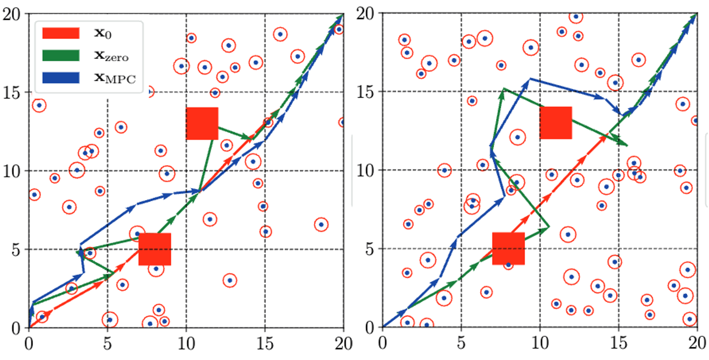

|
Xusheng Luo I'm currently a Posdoctoral Fellow at Intelligent Control Lab of Robotics Institute, Carnegie Mellon University, working with Dr. Changliu Liu, starting from April 2023. I received the Ph.D. degree in Mechanical Engineering and Materials Science from Duke University in December 2020, under the supervision of Dr. Michael M. Zavlanos. Prior to it, I received the B.S. and M.S. degrees in Aerospace Engineering from the Harbin Institute of Technology, China, in 2015 and 2017, respectively. Email / Resume / Google Scholar / Github / LinkedIn |
{kind=link}
News and Updates
|
ResearchMy research agenda is centered on building trustworthy AI-enabled autonomous systems by drawing on ideas from the fields of system and control, machine learning/AI, and formal methods. My research philosophy is to leverage mathematical and formal analysis to establish new algorithms and theorems for trustworthy, AI-enabled autonomy. A recurring theme throughout my research is scalability: I strive to deliver solutions that can handle richer task descriptions, high dimensional sensor data, and ever larger teams of robots. Methodologically, my work stands out for its deep integration of formal methods into the quest for trustworthy autonomy. These mathematically grounded techniques, widely relied on in software and hardware engineering for system analysis, requirement validation, and assurance, anchor every stage of my research pipeline. The key contributions of my work include:
|
PublicationsRepresentative papers are highlighted (* denotes equal contribution). |
|
Simultaneous Task Allocation and Planning for Multi-Robots under Hierarchical Temporal Logic Specifications
Xusheng Luo, Changliu Liu IEEE Transaction on Robotics (TRO), 2025 ICRA Workshop on Robot safety, 2025 PDF / Video / Code |
|
|
Hierarchical Temporal Logic Task and Motion Planning for Multi-Robot Systems
Zhongqi Wei*, Xusheng Luo*, Changliu Liu Robotics: Science and Systems (RSS), 2025 PDF / Video / Code |
|
|
Certifying Robustness of Learning-Based Keypoint Detection and Pose Estimation Methods
Xusheng Luo, Tianhao Wei, Simin Liu, Ziwei Wang, Luis Mattei-Mendez, Taylor Loper, Joshua Neighbor, Casidhe Hutchison, Changliu Liu ACM Transaction on Cyber-Physical Systems (T-CPS), 2025 ICRA Workshop on Public Trust in Autonomous Systems (PTAS), 2025 |
|
|
ModelVerification. jl: a Comprehensive Toolbox for Formally Verifying Deep Neural Networks
Tianhao Wei, Luca Marzari, Kai S. Yun, Hanjiang Hu, Peizhi Niu, Xusheng Luo, Changliu Liu International Conference on Computer Aided Verification (CAV), 2025 PDF / Code |
|
|
NL2HLTL2PLAN: Scaling Up Natural Language Understanding for Multi-Robots Through Hierarchical Temporal Logic Task Representation
Shaojun Xu*, Xusheng Luo*, Yutong Huang, Letian Leng, Ruixuan Liu, Changliu Liu CoRL Workshop on Learning Effective Abstractions for Planning (LEAP) , 2023 arXiv , 2024 PDF / Project Page |
|
|
Decomposition-based Hierarchical Task Allocation and Planning for Multi-Robots under Hierarchical Temporal Logic Specifications
Xusheng Luo, Shaojun Xu, Ruixuan Liu, Changliu Liu IEEE Robotics and Automation Letters (RA-L), 2024, with presentation at ICRA 2025 IROS Workshop on Formal Methods Techniques in Robotics Systems: Design and Control , 2023 PDF / Video / Code |
|

|
Simulation-aided Learning from Demonstration for Robotic LEGO Construction
Ruixuan Liu, Alan Chen, Xusheng Luo, Changliu Liu arXiv , 2023 PDF / Video |
|
Temporal Logic Task Allocation in Heterogeneous Multi-robot Systems
Xusheng Luo, Michael M Zavlanos IEEE Transactions on Robotics (T-RO), 2022 PDF / Extended version / Code |
|
|
Formal Verification of Stochastic Systems with ReLU Neural Network Controller
Shiqi Sun, Yan Zhang, Xusheng Luo, Panagiotis Vlantis, Miroslav Pajic, Michael M Zavlanos ICRA, 2022 |
|
|
An abstraction-free Method for Multi-robot Temporal Logic Optimal Control Synthesis
Xusheng Luo, Yiannis Kantaros, Michael M Zavlanos IEEE Transactions on Robotics (T-RO), 2021 PDF / Code |
|
|
An optimal Graph-Search Method for Secure State Estimation
Xusheng Luo, Miroslav Pajic, Michael M Zavlanos Automatica, 2021 |
|

|
Human-in-the-loop Robot Planning with Non-contextual Bandit Feedback
Yijie Zhou, Yan Zhang, Xusheng Luo, Michael M Zavlanos IEEE Conference on Decision and Control (CDC), 2021 |
|  |
Socially-aware Robot Planning via Bandit Human Feedback
Xusheng Luo*, Yan Zhang*, Michael M Zavlanos ACM International Conference on Cyber-Physical Systems (ICCPS), 2020 |
|
Single-agent Indirect Herding of Multiple Targets using Metric Temporal Logic Switching
Duc Le, Xusheng Luo, Leila J. Bridgeman, Michael M Zavlanos, Warren E. Dixon IEEE Conference on Decision and Control (CDC), 2020 |
|
|
Transfer Planning for Temporal Logic Tasks
Xusheng Luo, Michael M Zavlanos IEEE Conference on Decision and Control (CDC), 2019 |
Academic Service
|